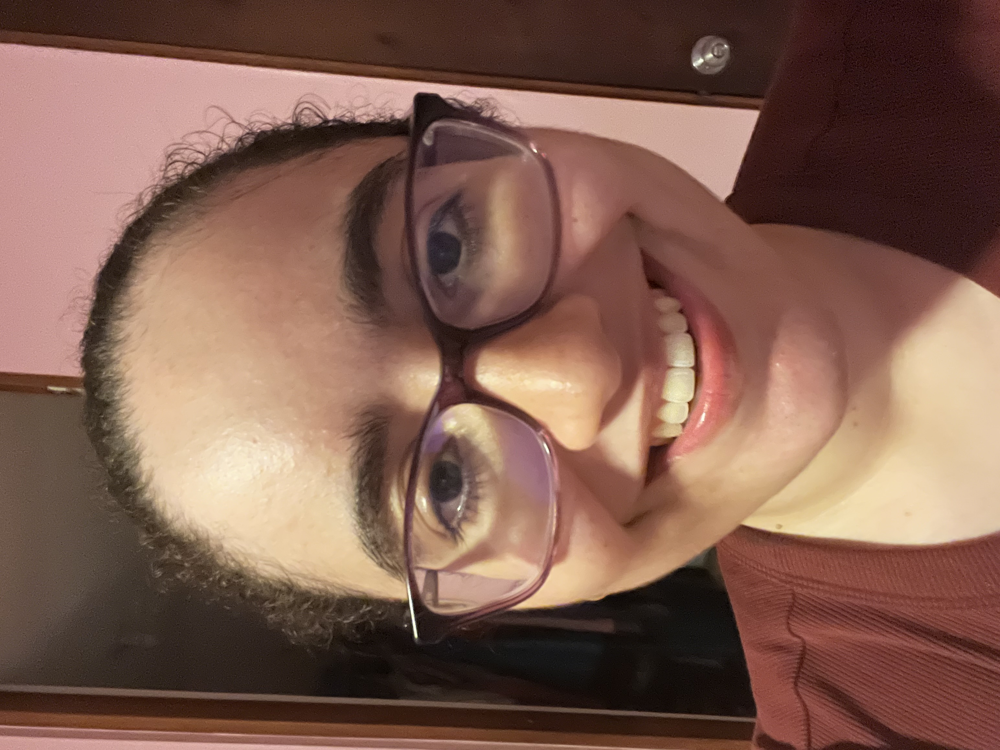

Nicole Marie Vera Abreu nació en San Juan, Puerto Rico, y se crió en Luquillo. Desde chiquita, ella tenía un interés en diseñar manualidades y el anime. En la escuela superior, ella decidió estudiar las ciencias de computadoras en la universidad, aunque ya no da clases de computadora. Ella es una principiante de la programación y está practicando para ser una profesional. No obstante, ella también se pasa ejercitando para cuidarse a ella misma y de su figura.

Ella habla dos lenguajes en su vida personal, que son el español y el inglés. Ella tiene autismo y se requiere usar las herramientas para exceder y entender mejor. Ella está estudiando constantemente en línea desde su casa en Luquillo en EDP University en el recinto de Hato Rey. Ella se fue a la escuela local Kelly's School y se graduó en el año 2023. Desde entonces, ella se pasa bien con los compañeros de EDP y se cuida mucho a sí misma.